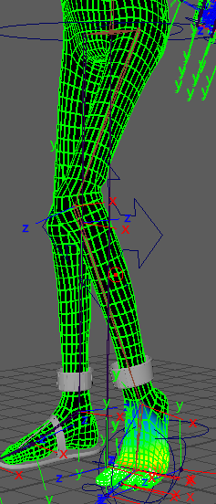
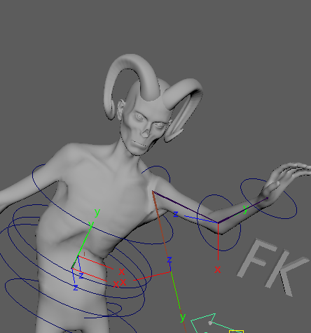

Project / 01
ailen
Character rigging progress in Maya.
Progress timeline
-
STEP 01: Leg IK - 2026-11-20

-
STEP 02: Spline Spine IK, Arm IK, FK - 2026-11-20

Project / 01
Character rigging progress in Maya.

